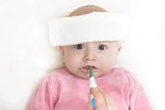

D A I L Y P A R E N T I N G

D A I L Y P A R E N T I N G
 |
Cara Memperlancar Produksi ASI |
 |
Ini Penyebab Bayi Anda Rewel Setelah Imunisasi |
 |
MPASI untuk Rangsang Pertumbuhan Gigi Bayi |
|  | Tips Atasi Demam pada Bayi Anda |
 |
Apa yang Menyebabkan Anak Susah Makan? |
Bayi rewel setelah imunisasi tentu membuat Bunda resah. Namun, Bunda tidak perlu terlalu khawatir jika kerewelan buah hati masih dalam tahap normal. Bayi rewel setelah imunisasi merupakan hal biasa. Untuk mengatasinya, sebaiknya Bunda mengetahui beberapa hal berikut yang mungkin menyebabkan buah hati rewel setelah si bayi disuntik.
Anak panas setelah imunisasi biasanya membuat anak lebih rewel. Untuk mengatasi demam, Bunda bisa memberikan ASI kepada buah hati. Demam akan berangsur reda jika buah hati banyak minum ASI.
Cobalah pakaikan baju yang longgar dan nyaman untuk buah hati. Kalau demam tidak kunjung turun, Bunda bisa memberikan penurun panas yang cocok untuk bayi sesuai anjuran dokter. Bunda direkomendasikan selalu berkonsultasi terlebih dahulu dengan dokter sebelum memberikan obat.
Salah satu yang dapat penyebab bayi rewel setelah mendapatkan imunisasi adalah rasa sakit karena habis disuntik. Sebenarnya bisa jadi rasa sakit sudah tidak terasa lagi. Namun, bisa saja buah hati mengalami trauma dengan jarum suntik dan berpikir bekas suntikan masih terasa sakit.
Bunda bisa menenangkan buah hati dengan menggendong, memeluk, dan menyusuinya. Namun, kalau Bunda melihat rasa sakitnya tidak kunjung hilang, pertimbangkan untuk berkonsultasi dengan dokter untuk memberikan penghilang rasa sakit.